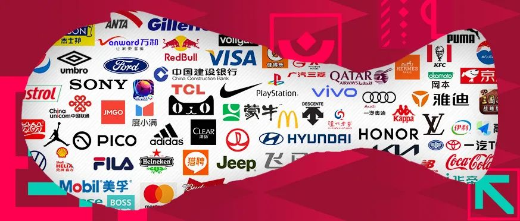

这篇文章在讨论什么
用多平台内容数据与“赞助媒体价值”复盘卡塔尔世界杯品牌表现，区分官方赞助、主动激活、被动曝光和伏击营销的不同回报结构。 本站把原文中对当前研究最有用的部分组织成下方营销启发卡；它们是编辑归纳，不是原文逐字转载。
营销启发卡
将文章最有价值的判断拆成营销启发卡；卡片会继续连接案例、数据、方法与其他深度文章。 卡片底部按主题连接全站相关案例、经典方法与深度文章。
50 品牌榜单中，蒙牛位列第一
文章以多平台内容与赞助媒体价值模型复盘 2022 世界杯，蒙牛在 50 个品牌中排名第一。榜单说明高等级权益若配合持续内容，能够形成稳定优势，但排名仍依赖平台和估值模型。
TOP10 中除耐克、伊利外多为官方赞助商
官方身份提供转播露出、标识使用和赛事现场等确定性资产；非官方品牌也能破圈，但需要更强的内容效率与媒介执行来弥补身份缺口。
评估时必须拆开三种参与方式
文章把品牌分为“全力激活”“基础或被动曝光”“伏击营销”。三类方式的投入、权利边界和内容自由度不同，不能用一个总声量榜替代策略判断。
蒙牛把 T-100 到决赛做成连续剧
从 T-100 预热、T-40 回忆、T-10 队长 TVC，到赛事期间 11 支视频、梅西与姆巴佩双球星、节目冠名和“每进一球送 1000 箱奶”，核心不是一支广告，而是持续占领赛程节点。
奥迪话题播放超过 11.7 亿
“让热爱过足瘾”用现金激励和用户参与扩大赛事讨论，单人最高奖励 1908 元。它说明平台任务机制可以把品牌内容转成规模化共创，但播放量不能直接等同有效观看或购买。
海信把 LED 口号变成赛程内容
海信通过动态更换场边文案、社交话题和电商直播，把硬性转播露出与赛果响应连接起来。稳定权益负责被看见，实时内容负责让观众理解品牌在说什么。
vivo 把“冠军时刻”接回产品
vivo 围绕颁奖与夺冠节点、四场球迷节、观赛活动和 #Shotonvivo 组织内容，将赛事高光与手机影像能力关联，避免赞助身份停在 Logo。
赞助媒体价值不是销售额
榜单适合比较传播效率，但被动转播露出、品牌主动内容、用户讨论和交易结果必须分表记录。最终复盘应形成“身份—执行—媒体结果—业务结果”四层证据链。
如何用到项目中
复盘大赛时建立“身份—执行—媒体结果—业务结果”四张表，并记录每个数字的统计区间和分母。
榜单和赞助媒体价值依赖模型估算；不同平台、算法与时间窗之间不宜直接横比。